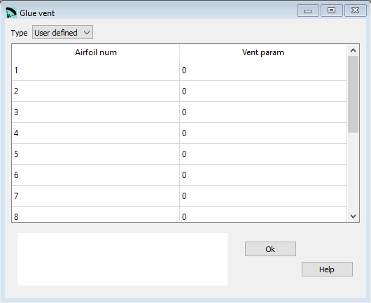

Glue vent¶
This window allows to automatically “glue” the air inlets (vents) into the panels of upper or lower sail or to make them standalone.
The vents include sewing edges.
The skin tension in the vent is linear and automatically corresponds to that defined at the points corresponding for upper and lower sail.
{kind=link}
Raw data:
*******************************************************
* 26. GLUE VENTS
*******************************************************
1
1 -6 70 100
2 -4 0 80
3 -4 80 0
4 -4 0 80
5 -4 80 0
6 -4 0 100
7 -4 100 50
8 -4 50 0
9 4 100 0
10 5 0. 0. 80.
11 5 0. 0. 80.
12 -5 50. 50. 50.
13 -5 50. 100. 50.
14 -6 70. 70.
15 -1
Type¶
Glue vent is an optional section.
If you do not want to define/ use these parameters set the Type to Defaults.
If Type is set to User defined lepg will create automatically the needed configuration lines depending on number of cells and ribs configured in the Basic data window.
Airfoil num¶
Number of the airfoil (cell) configured on this line.
Vent param¶


0 Do not glue the vent anywhere (open air inlet). It is drawn apart to define with CAD special air intakes (circles, ellipses, …)
1 glue the vent to the upper sail (normally used in single skin paragliders).
-1 Glue the vent to the lower sail (usually means, closed cell).
-2 Diagonal vent 100% open on left, glued to lower sail.
-3 Diagonal vent 100% open on right, glued to lower sail.
4 Diagonal vent. With two additional parameters you define how wide open the vent is on the left and right side of the cell. Glued to upper sail.
-4 Diagonal vent. With two additional parameters you define how wide open the vent is on the left and right side of the cell. Glued to lower sail.
5 Arched vent. With three additional parameters you define the opening on the left and right side and the arc depth. Glued to upper sail.
-5 Arched vent. With three additional parameters you define the opening on the left and right side and the arc depth. Glued to lower sail.
6 Elliptical inlet. With two additional parameters you define width and height of the inlet. Glued to upper sail.
-6 Elliptical inlet. With two additional parameters you define width and height of the inlet. Glued to lower sail.
A more detailed description you can find here Laboratori d'envol website.